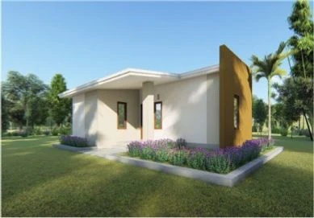
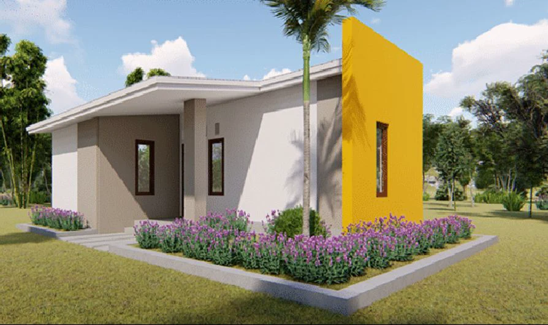
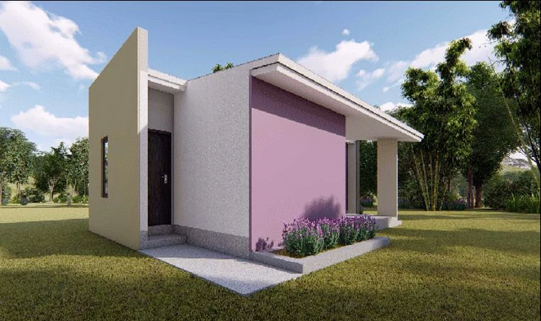
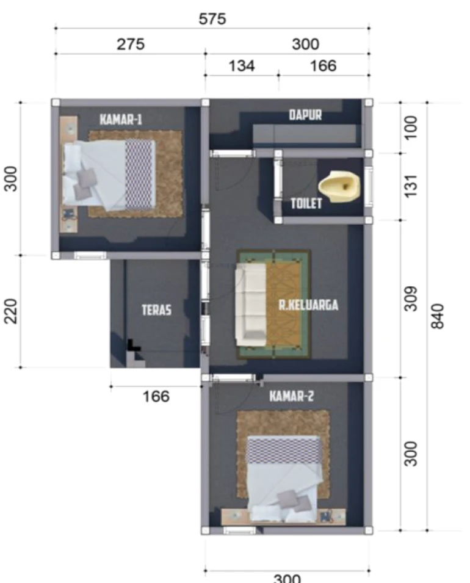
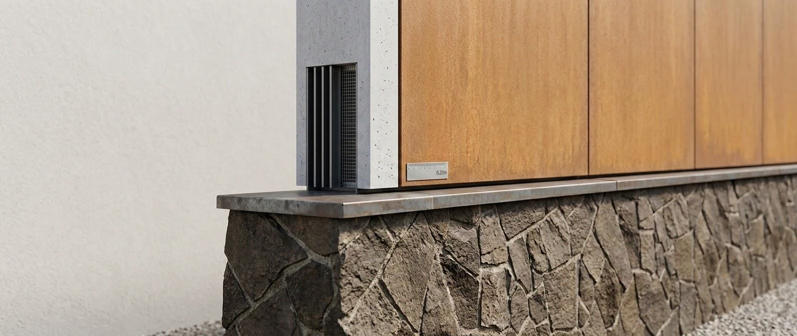

Fjäll Group / Housing at scale / 02
Lombok Housing Initiative
One housing system. A community of possibilities.
Lombok, Indonesia · Mass-scale housing250+ housing programme / Design references

- Programme scope
- 250+ homes
- Place
- Lombok, Indonesia
- Design reference
- FAD 36 m² base-unit concept
- System
- Composite EPS panel infrastructure
Fjäll’s documented contribution
Regional-government housing programme listed in the company profile
Project-specific dates, delivery status and detailed scope are available from the team.
The company profile records a Lombok programme of over 250 homes. The FAD deck adds a design language for repeatable homes: a 36 m² base-unit concept, composite EPS panel infrastructure, coordinated openings and several exterior finishes. These supplied renders and diagrams show system possibilities; the programme’s detailed unit mix and delivery status are confirmed with the team.
Mass-scale GX 100 building envelopes
FAD / The design referencesSupplied FAD deck
A home, repeated.
A place, made personal.
A 36 m² base-unit concept, coordinated openings and a choice of exterior expressions. These are supplied design references for the 250+ programme story, rather than photographs of completed programme homes.





Define the unit mix, land conditions, infrastructure and phasing together. The development brief informs both the home and the wider community.
Discuss a similar projectNo finished brief needed. Start with a place, a question or an ambition.